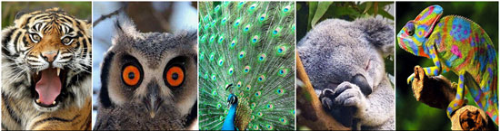

人格特質分析系統
（Professional Dynametric Programs，簡稱PDP）

目前，PDP系統更已成為世界500強企業，無論是在領導特質分析，以及人才運用上的最佳管理工具，此系統將領導者分為五大類型，並巧妙以老虎、孔雀、無尾熊、貓頭鷹與變色龍5種動物作為隱喻。
請回答以下的問題(共30題)：如果答案是非常同意，請給自己打5分； 如果是比較同意，則打4分； 如果是差不多，打3分； 如果只是有一點同意，請打2分； 如果答案是不同意，就打1分。